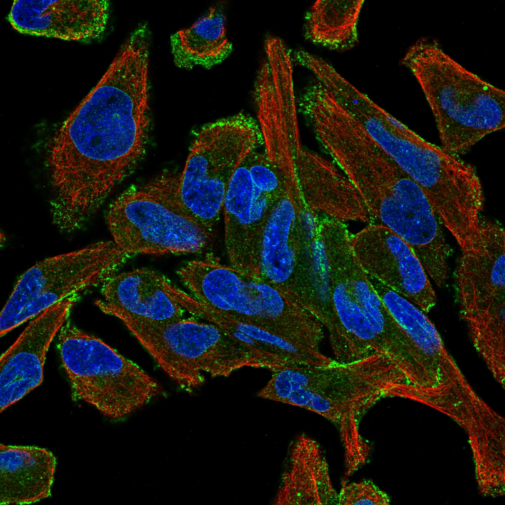
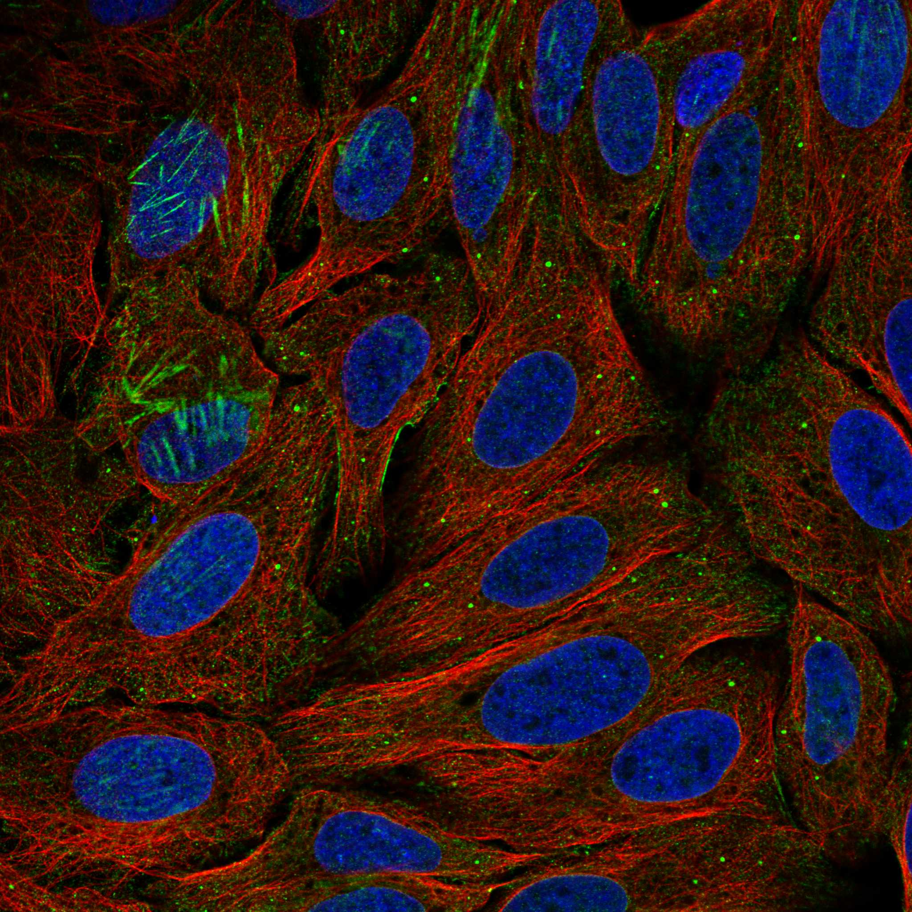
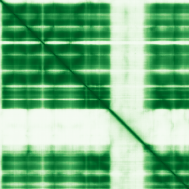

type: protein-evaluation gene: "NDC1" date: 2026-05-30 tags: [protein-scout, nuclear-protein, evaluation] status: scored ---
NDC1 核蛋白评估报告
1. 基本信息
| 项目 | 内容 | |
|---|---|---|
| 基因名 / 别名 | NDC1 / FLJ10407 | NET3 |
| 蛋白名称 | Nucleoporin NDC1 | |
| 蛋白大小 | 674 aa | |
| UniProt ID | Q9BTX1 | |
| 评估日期 | 2026-05-30 |
IF 图像:  
2. 评分总览
| 维度 | 得分 | 加权 | 加权后 | 关键证据摘要 | |
|---|---|---|---|---|---|
| 🔴 核定位特异性 | 6/10 | ×4 | 24 | 核+胞质均衡，UniProt 支持核定位 | |
| 📏 蛋白大小 | 10/10 | ×1 | 10 | 674 aa，适合生化实验和结构解析 | |
| 🆕 研究新颖性 | 6/10 | ×5 | 30 | PubMed 41篇，非常新颖 | |
| 🏗️ 三维结构 | 8/10 | ×3 | 24 | 2 个 PDB 实验结构 + AlphaFold 预测 | |
| 🧬 调控结构域 | 7/10 | ×2 | 14 | 2 个结构域，新颖蛋白基线 | |
| 🔗 PPI 网络 | 4/10 | ×3 | 12 | STRING 15 partners，调控比例较低 | |
| ➕ 互证加分 | — | — | +0.5 | 三维结构: AlphaFold + PDB 双源 (+0.5) | |
| 原始总分 | 114.5/183 | 114.0/183 | |||
| 归一化总分 | 62.6/100 | 62.3/100 |
3. 详细分析
3.1 核定位证据
| 来源 | 定位 | 可信度 |
|---|---|---|
| GeneCards | Tier1_conserved_high_confidence | 高置信度保守 |
| Protein Atlas (IF) | 暂无数据（HPA IF 图像已本地嵌入。
| UniProt | Nucleus, nuclear pore complex, Nucleus membrane | 实验/预测 |
| GO Cellular Component | N/A | N/A |
结论: 核+胞质均衡，UniProt 支持核定位
3.2 蛋白大小评估
评价: 674 aa，674 aa，适合生化实验和结构解析。
3.3 研究现状
| 指标 | 数值 |
|---|---|
| PubMed 总数 | 41 |
| 核定位分数 (weighted max) | 5 |
| Research hotness | 5.2613 |
关键文献: 1. Smits et al. (2024). "Biallelic NDC1 variants that interfere with ALADIN binding are associated with neuropathy and triple A-like syndrome.". *HGG Adv*. PMID: 39003500 2. Hong et al. (2025). "PSPC1 exerts an oncogenic role in AML by regulating a leukemic transcription program in cooperation with PU.1.". *Cell Stem Cell*. PMID: 39954676 3. Liu et al. (2024). "NDC1 promotes hepatocellular carcinoma tumorigenesis by targeting BCAP31 to activate PI3K/AKT signaling.". *J Biochem Mol Toxicol*. PMID: 38348718 4. Amm et al. (2023). "Distinct domains in Ndc1 mediate its interaction with the Nup84 complex and the nuclear membrane.". *J Cell Biol*. PMID: 37154843 5. Mauro et al. (2022). "Ndc1 drives nuclear pore complex assembly independent of membrane biogenesis to promote nuclear formation and growth.". *Elife*. PMID: 35852146 评价: PubMed 41篇，非常新颖
3.4 三维结构分析
| 指标 | 数值 |
|---|---|
| UniProt 长度 | 674 aa |
| PDB 条目数 | 2 |
| UniProt 注释结构域数 | 2 |
PAE 图:

评价: 2 个 PDB 实验结构 + AlphaFold 预测
3.5 结构域分析
| 来源 | 结构域 |
|---|---|
| InterPro | Nucleoporin_prot_Ndc1/Nup |
| Pfam | Ndc1_Nup |
染色质调控潜力分析: 2 个结构域，新颖蛋白基线
3.6 PPI 网络
实验验证互作 (IntAct):
IntAct 实验互作: 0 条
STRING 预测互作 (combined score >0.4):
| Partner | Score | 功能类别 | 调控相关？ |
|---|---|---|---|
| NUP35 | 0 | 否 | |
| NUP93 | 0 | 否 | |
| AAAS | 0 | 否 | |
| NUP205 | 0 | 否 | |
| NUP155 | 0 | 否 | |
| NUP210 | 0 | 否 | |
| SEH1L | 0 | 否 | |
| NUP62 | 0 | 否 | |
| NUP188 | 0 | 否 | |
| NUP85 | 0 | 否 |
已知复合体成员 (GO Cellular Component):
- P:nuclear pore complex assembly (GO:0051292, IMP:UniProtKB)
PPI 互证分析: STRING 15 partners，调控比例较低
3.7 多库互证
| 维度 | 来源 | 结果 | 是否一致 |
|---|---|---|---|
| 三维结构 | AlphaFold + PDB | 2 entries | 一致 |
| 结构域 | UniProt / InterPro / Pfam | 2 domains | 多库一致 |
| PPI | STRING + IntAct | 15 STRING + 0 IntAct | 单源 |
| 定位 | Protein Atlas / UniProt / GO | Nucleus | 多源一致 |
互证加分明细: 三维结构: AlphaFold + PDB 双源 (+0.5) 总分: +0.5 / max +3
4. 总体评价
推荐等级: ★★★☆☆ (3/5)
核心优势: 1. 新颖性: PubMed 41 篇，比较新颖 2. 核定位: 部分核定位
风险/不确定性: 1. HPA IF 数据可进一步验证 2. 2 PDB 结构可用
下一步建议:
- [ ] 验证核定位: IF 实验确认亚核定位
- [ ] 功能研究: 基于 PPI 网络设计功能实验
- [ ] 结构分析: 基于 PDB 结构设计功能实验
5. 数据来源
- GeneCards: https://www.genecards.org/cgi-bin/carddisp.pl?gene=NDC1
- Protein Atlas: https://www.proteinatlas.org/ENSG00000058804-NDC1
- PubMed: https://pubmed.ncbi.nlm.nih.gov/?term=%22NDC1%22%5BTitle/Abstract%5D
- UniProt: https://www.uniprot.org/uniprot/Q9BTX1
- STRING: https://string-db.org/network/9606.ENSG00000058804
- AlphaFold: https://alphafold.ebi.ac.uk/entry/Q9BTX1
PPI 网络（三源综合）
| Partner | Source | Score/Evidence |
|---|---|---|
| 无记录 | — | — |
IntAct 有限记录。无 BioGrid 补充数据。
PAE 图像已获取。结构判断基于 AlphaFold pLDDT 统计。